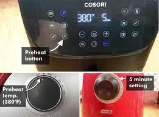
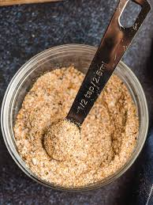
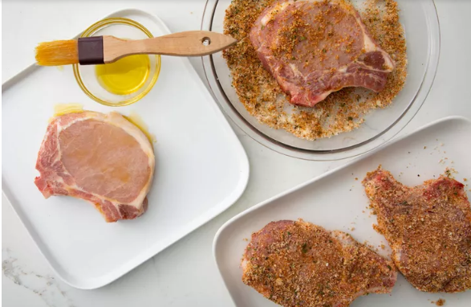
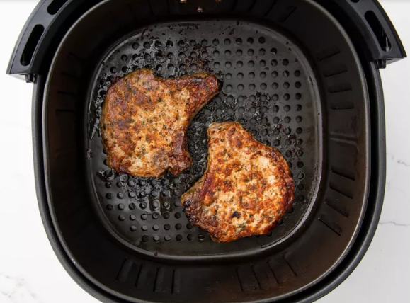
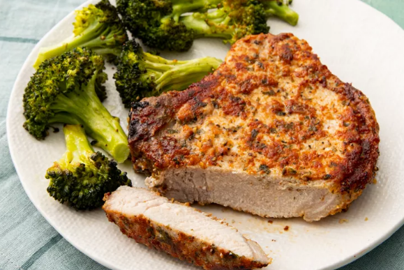

Boneless pork chops cooked to perfection in the air fryer. This recipe is so easy and you couldn't ask for a more tender and juicy chop.
| Step 1 | Step 2 | Step 3 |
|---|---|---|
|  |  |  |
|
Preheat the air fryer to 380 degrees F (190 degrees C). |
Combine Parmesan cheese, paprika, garlic powder, salt, parsley, and pepper in a flat shallow dish; mix well.. |
Coat each pork chop with olive oil. Dredge both sides of each chop in the Parmesan mixture and set on a plate. |
| Step 4 | Step 5 | |
|  |  | |
|
Place 2 chops in the basket of the air fryer and cook for 10 minutes |
Serve Hot and ENJOY! |